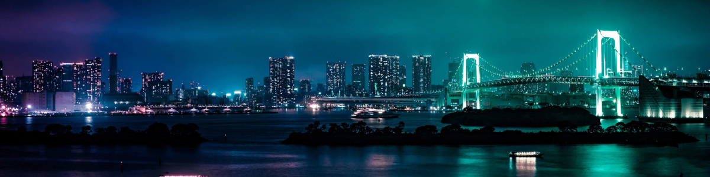

Acomodação
Nos hospedamos no luxuoso Hotel Okura Tokyo, localizado no bairro de Toranomon.
O hotel possui uma vista incrível para a cidade, e oferece uma ampla gama de serviços,
incluindo um spa, uma piscina, restaurantes renomados e um lounge bar. Ficamos encantados
com a atenção aos detalhes e a qualidade do atendimento.

Vista da cidade da janela do hotel!
Explorando a cidade
Começamos nosso tour pela cidade com uma visita ao famoso Templo Sensoji, um dos mais antigos e
importantes templos budistas do Japão. Caminhamos pela rua comercial Nakamise, onde encontramos
muitas lojas vendendo artigos típicos japoneses, como quimonos, leques e comidas tradicionais.
Em seguida, visitamos o icônico cruzamento de Shibuya, um dos mais movimentados do mundo, onde
observamos a sincronia dos pedestres atravessando a rua. No dia seguinte, visitamos o Parque Ueno,
que abriga o Museu Nacional de Tóquio, onde pudemos conhecer a história e cultura japonesa. À noite,
fomos a um típico Izakaya, um bar japonês que serve uma grande variedade de pratos e bebidas.
Compras
Tóquio é famosa por suas lojas de departamento e centros comerciais, e não podíamos deixar de visitar
algumas delas. Fomos ao famoso distrito comercial de Ginza, onde encontramos lojas das marcas mais renomadas
do mundo. Também visitamos o distrito de Akihabara, conhecido como o centro de eletrônicos e entretenimento
de Tóquio, onde encontramos diversas lojas de jogos, eletrônicos e mangás.
Gastronomia
Não se pode falar do Japão sem mencionar sua gastronomia. Tivemos a oportunidade de experimentar uma grande
variedade de pratos típicos, como sushi, sashimi, ramen e tempura, além de doces tradicionais como o mochi.
Concluindo...
Nossa viagem a Tóquio com a agência Jornada Viagens foi uma experiência inesquecível. A equipe da agência
cuidou de todos os detalhes, desde a reserva do hotel até a escolha dos melhores lugares para visitar e comer.
Recomendamos a Jornada Viagens para todos que desejam fazer uma viagem incrível ao Japão.